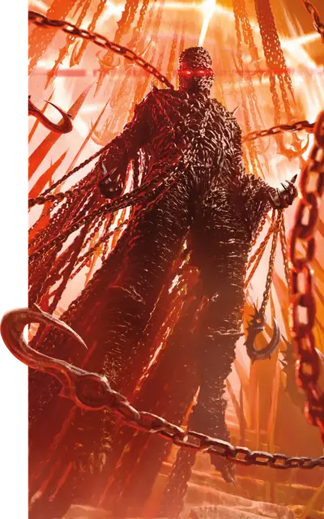

Цепной дьявол (китон)
Chain Devil
Среднее Исчадие (Дьявол), Принципиальное Злое

Класс Защиты 15 Инициатива +5 (15)
Хиты 85 (10к8 + 40)
Скорость 30 футов
| мод | спас | ||
|---|---|---|---|
| СИЛ | 18 | +4 | +4 |
| ЛОВ | 15 | +2 | +2 |
| ТЕЛ | 18 | +4 | +7 |
| мод | спас | ||
|---|---|---|---|
| ИНТ | 11 | +0 | +0 |
| МДР | 12 | +1 | +4 |
| ХАР | 14 | +2 | +2 |
Сопротивление урону Дробящий, Колющий, Рубящий, Холод
Иммунитеты Огонь, Яд; Отравленный
Чувства Тёмное зрение 120 футов (игнорирует магическую Темноту), пассивное Восприятие 11
Языки Инфернальный, Телепатия 120 фт.
Опасность 8 (3 900 опыта; БВ +3)
Особенности
Восстановление дьявола. Когда дьявол умирает за пределами Девяти Преисподних, его тело превращается в сернистое облако и в тот же миг заново возрождается со всеми Хитами где-то в Девяти Преисподних.
Сопротивление магии. Дьявол совершает с Преимуществом спасброски от заклинаний и прочих магических эффектов.
Действия
Мультиатака. Дьявол совершает две атаки Цепью и использует Инфернальные оковы.
Цепь. Бросок рукопашной атаки: +7, досягаемость 10 фт. Попадание: 11 (2к6 + 4) Рубящего урона. Если цель — существо Большого размера или меньше, она становится Схваченной (Сл освобождения от захвата 14) одной из двух цепей; пока длится захват, она также Опутана.
Инфернальные оковы. Дьявол сотворяет на существе оковы из огненных цепей. Спасбросок Ловкости: Сл 15, одно видимое дьяволом в пределах 60 футов существо. Провал: 9 (2к4 + 4) урона Огнём, и цель становится Опутанной до конца следующего хода дьявола, после чего цепи исчезают. Если цель Большого размера или меньше, дьявол перемещает цель по прямой к себе на расстояние вплоть до 30 футов. Успех: Цепи исчезают.
Реакции
Тревожный взгляд. Условие: Видимое дьяволом существо начинает свой ход в 30 футах от дьявола и видит его. Эффект — Спасбросок Мудрости: Сл 15, вызвавшее ответ существо. Провал: Цель Испугана до конца своего хода. Успех: Цель получает Иммунитет к Тревожному взгляду этого дьявола на 24 часа.
Бонус мастерства +3
Среда обитания Девять преисподних
Сокровища Инструментальные
Цепной дьявол
Дьявол боли и контроля
Цепные дьяволы, также известные как китоны, мнят себя творцами больного искусства и пускают в ход обман, запугивание и безжалостный металл, чтобы принуждать пленников предавать самих себя. Многие китоны служат могучим дьяволам мастерами пыток, вырывая секреты из заточённых душ с помощью смертоносных оживших цепей. Сами по себе же цепные дьяволы занимаются тем, что подталкивают безжалостных личностей к изучению запретной магии — затем чтобы увлечь своих «учеников» прямиком в Девять Преисподних.
Помимо психологических угроз и физических увечий, цепной дьявол способен одним лишь тревожным взглядом заставить жертву видеть не само чудовище — дьявола, — а свой самый страшный кошмар.
Совершите бросок по таблице «Личины цепного дьявола» для вдохновения или определите сами, в каком облике является китон.
Личины цепного дьявола
| 1к4 | Наблюдателю цепной дьявол предстаёт в виде… |
| 1 | Трупа любимого существа. |
| 2 | Осуждающего божества. |
| 3 | Сурового наставника или начальника. |
| 4 | Самого наблюдателя в худший миг его жизни. |